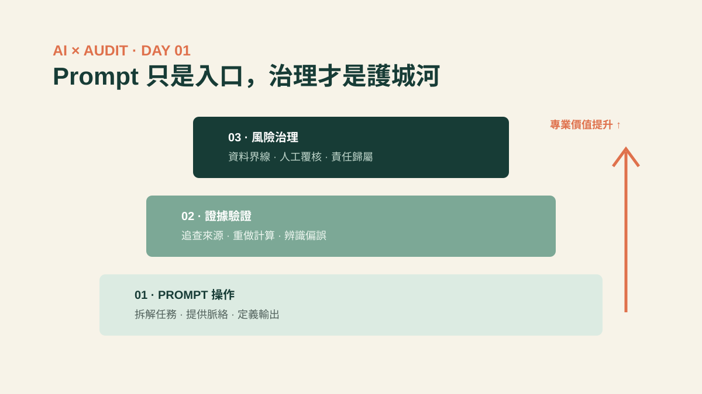

如果把生成式 AI 想成一位速度極快的新進同仁，Prompt 就像工作指示。指示很重要，但你不會因為一個人很會接收指示，就把稽核結論交給他簽字。

最近談到 AI 學習，最常見的起點是「如何寫出好 Prompt」。這很合理：角色、任務、背景、限制與輸出格式寫得越清楚，結果通常越接近期待。但對稽核人員而言，這只解決了「如何問」；真正困難的是「該問什麼」、「要相信到什麼程度」，以及「出了錯，誰負責」。
Prompt 能改善輸出，不能替你建立保證
一段漂亮的 Prompt 可以要求 AI 摘要合約、整理訪談紀錄、產生控制測試步驟，甚至指出異常模式。然而，流暢不等於正確，完整也不等於有證據。生成式 AI 的輸出仍可能遺漏條件、混淆時間、編造來源，或把相關性說成因果關係。
稽核工作的價值，恰恰建立在這些「不能只看表面」的地方：來源是否可靠？樣本是否具代表性？例外是單一錯誤，還是控制設計失效？管理階層的說法能否與系統紀錄互相印證？AI 可以協助整理線索，但無法自動取得充分、適切的證據。
Prompt 是操作介面；專業懷疑、證據判斷與責任意識，才是稽核人的作業系統。
稽核人員真正需要的三層 AI 能力
第一層：把 AI 當工具，而不是答案機
適合交給 AI 的，通常是可拆解、可覆核、低判斷風險的工作，例如：把政策轉成訪談題綱、將大量文字初步分類、比較兩版流程差異。先定義目的與驗收條件，再決定是否使用 AI；不要因為工具很新，就反過來替工具找問題。
第二層：建立「輸出不可直接採信」的習慣
要求 AI 附來源只是第一步，因為來源本身也可能不存在。重要結論應回到原始文件、系統紀錄或權威標準驗證。若輸出將進入工作底稿，還要保留使用目的、輸入資料範圍、模型或版本、覆核方式與修正紀錄，讓另一位稽核人員能重建你的判斷路徑。
第三層：從使用者升級為風險提問者
The IIA 的 AI 稽核框架將注意力放在治理、管理，以及內部稽核角色，並要求評估資料、演算法與資安控制。NIST 的 AI 風險管理框架也強調可靠、安全、透明、可解釋、隱私與公平等特性。這些問題遠超過「Prompt 要怎麼寫」。
當組織用 AI 篩選履歷、核准信用、預測需求或偵測舞弊，稽核人員要能追問：訓練與輸入資料從哪裡來？錯誤率對誰影響最大？模型更新後是否重新驗證？人員能否推翻系統決定？異常是否被持續監控？這才是 AI 時代的稽核視野。
今天就能開始的練習
- 選一項低風險工作，例如整理公開政策，不要一開始就放入機密資料。
- 寫下「任務目的、可接受錯誤、驗證方法」，再打開 AI 工具。
- 把 AI 的三項重要主張逐一回到原始來源查核。
- 記錄哪些步驟省下時間、哪些地方仍需要專業判斷。
結語：不要只成為更快的提問者
Prompt 技巧會快速普及，也會隨工具介面改變。相對不容易被取代的，是把模糊風險轉成可查核問題、判斷證據品質、看見利害關係人影響，以及在不確定中提出負責任結論的能力。
所以，請學 Prompt，但別停在 Prompt。稽核人員真正要學的，是如何讓 AI 在可控、可驗證、可追溯的範圍內，放大自己的專業判斷。
把 AI 摘要變成可覆核的工作流程
某稽核團隊用 AI 整理 200 份採購說明，但不讓 AI 直接下結論。他們先移除敏感資料、定義「事前核准／事後補簽／資料不足」三類標準，要求每筆分類附上原文句子，再由稽核人員覆核全部高風險項目及抽查其他項目。整理時間由 6 小時降到約 2.5 小時，同時保留了證據來源與人工判斷。
- AI 負責初步分類與定位原文。
- 稽核人員負責標準、覆核與最終結論。
- 工作底稿記錄 Prompt、輸入範圍、抽查結果與修正。